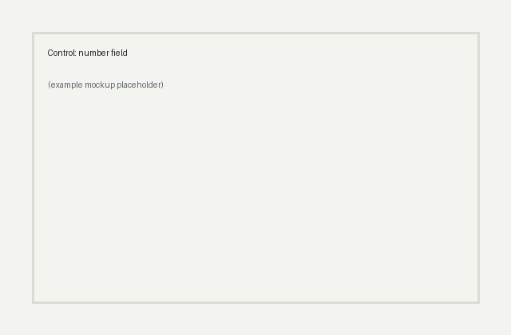

Pre-registered experiment brief · 09 Oct 2026
DTC assessment quiz, paid social traffic, mobile-first, UK
Author: Aminat Oyediran
Test design
1 · The why
Session recordings (n=120, Sept 2026) show 38% of quiz starters abandon at the goal step, the highest single-step drop in the flow. 14 of the 31 abandoners who were later surveyed said they 'didn't know what number to put'. Support tickets mention the step 9 times in the last month. GA4 confirms median time on this step is 2.4x the next slowest step.
Because quiz starters drop off at the 'how much weight do you want to lose?' step when asked to type a precise number, replacing the open number field with four goal ranges will increase quiz completion rate, because it removes both the effort of choosing a number and the discomfort of disclosing one.
2 · What is being tested
Current goal step: single open numeric field labelled 'How much weight do you want to lose? (kg)', Continue button disabled until a value is entered.

Eligible: All new visitors who start the quiz from paid social landing pages, UK, any device.
Excluded: Returning visitors with an existing account, internal IPs, visitors arriving from email or retargeting, and anyone already in the pricing-page test.
Entry point: Assignment happens on quiz start (first step viewed), not on page load, so bounces before the quiz do not dilute the sample.
User (first-party cookie ID, sticky across sessions). Session-level assignment would let one person see both versions across visits and contaminate the result.
3 · How it will be judged
Quiz completion rate
Numerator: Users who reach the quiz results screen
Denominator: Users assigned on quiz start
Attribution window: Same session as assignment, plus 24 hours for returns via the resume link
At the pre-registered end of week 2, Variant B is a win if quiz completion is at least 23.76% (8% relative on the 22% baseline) with p < 0.05 two-sided and all three guardrails hold. It is a loss if completion is significantly lower, or if the checkout guardrail is breached regardless of the completion result. Anything else is inconclusive and the test is not extended.
An 8% relative lift on 22% completion is about 158 extra completions a week at current traffic, which at the current completer-to-checkout rate is worth roughly £9k a month in first orders. Anything smaller would not justify the design and engineering time plus the follow-on work on the other steps.
4 · Statistics and logistics
22.00% for the primary metric. Source: GA4, quiz starts to results screen, 1 Aug to 28 Sept 2026, same audience definition as the test.
8,941 per arm (17,882 total) at 18,000 eligible units a week. Run for 2 full weeks at α=0.05, power 80%. Fixed before launch.
50/50 from launch. No ramp: the change is low-risk and a ramp would push the end date out.
Run the full pre-registered 2 weeks and read once at the end. No interim significance reads. The only early stop is a guardrail breach of more than 10% relative on checkout rate confirmed over 3 consecutive days, or a tracking fault.
5 · Risks and ownership
Sample size per arm uses the two-proportion z-test: n = (z1−α/2·√(2p̄(1−p̄)) + z1−β·√(p₁(1−p₁)+p₂(1−p₂)))² / (p₂−p₁)², with p₂ = p₁·(1+MDE). Run time is total sample over weekly eligible units, rounded up, with a two-week floor. These figures were fixed before the brief was written and the brief was generated around them, so the success criteria are pre-registered rather than fitted afterwards.